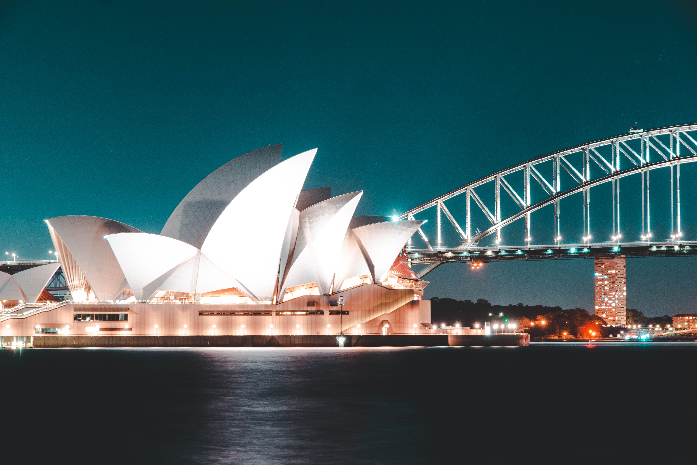

A Journey Through Japan: Exploring Ancient Traditions and Futuristic Marvels
Embarking on an unforgettable adventure to the enchanting land of Japan, I found myself immersed in a captivating blend of ancient traditions and futuristic marvels. From the serene temples and gardens to the bustling metropolises, every step revealed a vibrant tapestry of history, culture, and innovation. Let me take you on a virtual journey through my remarkable experiences in this captivating country.
Chapter 1: Arrival in Tokyo - A Glimpse into the Future
Upon arriving in Tokyo, the pulsating energy and neon-lit streets instantly swept me into a realm where tradition intertwines with cutting-edge technology. Exploring the sprawling Shibuya Crossing, I marveled at the synchronized chaos as crowds of people flowed seamlessly across the intersection. The iconic Tokyo Skytree offered a panoramic view of the city, showcasing its endless skyscrapers and the distant outline of Mount Fuji.
Chapter 2: Kyoto - Tranquility Amidst Timeless Beauty
Stepping back in time, I ventured to Kyoto, where ancient traditions and spiritual tranquility captivated my soul. The ethereal beauty of the Arashiyama Bamboo Grove transported me to another world, its towering bamboo stalks whispering secrets of centuries past. In the historic district of Gion, I wandered through narrow streets, hoping to catch a glimpse of a geisha gracefully gliding by. Visiting the iconic Kinkaku-ji, the Golden Pavilion, I marveled at its shimmering reflection in the surrounding pond.
Chapter 3: Hiroshima - Embracing Resilience and Peace
A solemn yet inspiring visit to Hiroshima brought me face-to-face with the resilient spirit of humanity. Standing beneath the iconic Atomic Bomb Dome, a haunting reminder of the past, I felt a profound sense of reflection and hope for a peaceful future. The Peace Memorial Park and Museum served as a poignant testament to the enduring resilience and the unwavering desire for global harmony.
A Sojourn in Italy: Unveiling the Treasures of La Dolce Vita
Subtitle: A Tale of Romance, Art, and Culinary Delights
Introduction:
Embarking on a dreamy escapade to the captivating land of Italy, I found myself enamored by its timeless beauty, rich history, and delectable cuisine. From the enchanting canals of Venice to the ancient ruins of Rome, each destination revealed a tapestry of romance, art, and gastronomic wonders. Join me on a virtual journey as I recount the unforgettable experiences that unfolded during my Italian sojourn.
Chapter 1: Venice - Navigating the City of Love
Arriving in the floating city of Venice, I was immediately transported into a world of romance and enchantment. Gliding along the serene canals on a gondola, I reveled in the timeless beauty of the architecture and the melodic serenades of gondoliers. Exploring the narrow streets and hidden alleyways, I stumbled upon quaint cafés and artisan workshops, where the secrets of Venetian mask-making were unveiled.
Chapter 2: Florence - A Renaissance Reverie
In the heart of Tuscany, Florence captivated my soul with its artistic legacy and architectural marvels. Gazing in awe at Michelangelo's David in the Accademia Gallery, I marveled at the sculptor's mastery and the sheer beauty captured in stone. Walking through the Uffizi Gallery, I found myself immersed in a symphony of Renaissance art, encountering masterpieces by Botticelli, Da Vinci, and Raphael.
Chapter 3: Amalfi Coast - Paradise on Earth
The breathtaking Amalfi Coast beckoned me with its azure waters, picturesque cliffside villages, and sun-soaked beaches. As I strolled through the pastel-hued streets of Positano, I soaked in the intoxicating views of the Mediterranean Sea and reveled in the vibrant atmosphere. Savoring the region's culinary delights, from fresh seafood to zesty limoncello, I found myself falling under the spell of the coastal paradise.

An Epic Journey through a Land of Contrasts
Venturing to the world's largest coral reef system, I dove into a mesmerizing underwater world at the Great Barrier Reef. Snorkeling amidst vibrant coral formations, I encountered an array of colorful fish and breathtaking marine life. The reef's immense beauty and ecological significance left me in awe, igniting a passion for marine conservation and a deep appreciation for this natural wonder.
Chapter 3: Uluru - Mystical Heart of the Outback
Journeying to the heart of Australia's Red Centre, I stood before the majestic Uluru, a sacred monolith that radiated an ethereal aura. Witnessing the vibrant hues of Uluru at sunrise and sunset, I felt a profound connection to the land and its ancient Indigenous heritage. Exploring the nearby Kata Tjuta, a collection of striking domed rock formations, I reveled in the raw beauty of the Outback.
Chapter 4: Melbourne - A Cultural Haven
In the vibrant city of Melbourne, I delved into a world of arts, culture, and culinary delights. Exploring the hidden laneways adorned with vibrant street art, I stumbled upon quaint cafes and eclectic boutiques. The Melbourne Museum and National Gallery of Victoria showcased a rich tapestry of history and art, while the city's diverse food scene tantalized my taste buds with its fusion of international flavors.